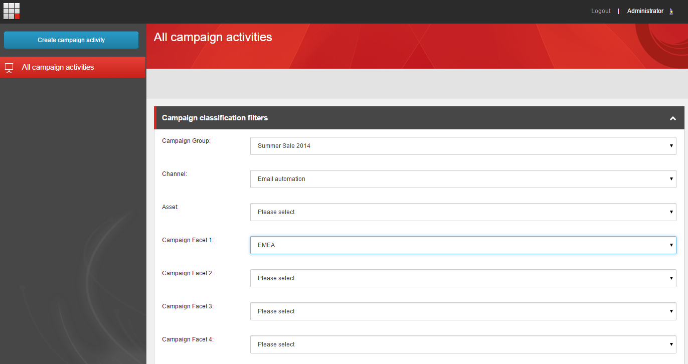
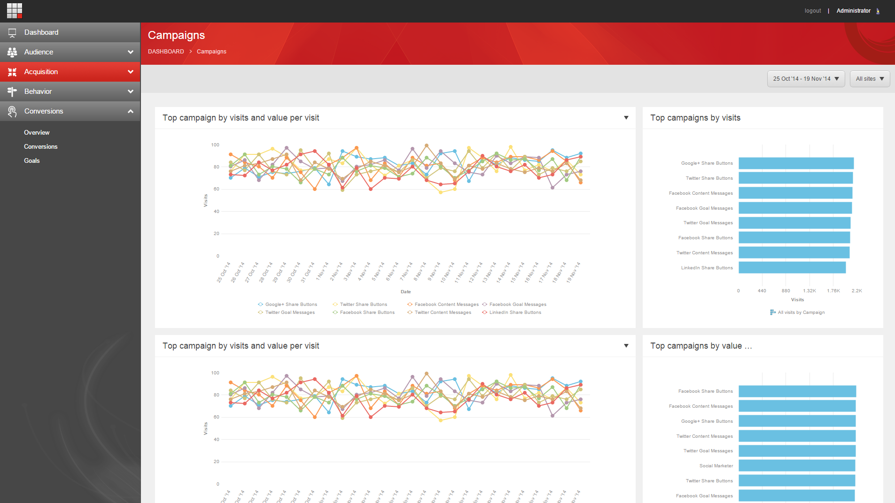

キャンペーン¶
キャンペーンとは、ウェブサイトへの訪問を促すために設計されたプロモーションや広告イニシアティブのことです。キャンペーンは一定期間実施されます。キャンペーンは、ブランド認知度を高めたり、ウェブサイト上で特定のアクションを実行してもらうために利用できます。
Sitecore Experience Platformでは、キャンペーングループとキャンペーンアクティビティを作成することで、キャンペーンを追跡することができます。キャンペーングループは、異なるチャネルにまたがる複数のキャンペーンアクティビティを含む高レベルのキャンペーンです。キャンペーンアクティビティは、特定のチャンネルで期間限定で実施される個別のキャンペーンです。
キャンペーンの識別¶
キャンペーンクリエーターアプリケーションで新しいキャンペーン活動を作成すると、キャンペーングループとチャンネルによってそれらを識別することができます。これらは、キャンペーン活動がどのグループに属するかを識別するタグとして機能します。マーケティングコントロールパネルのタクソノミノードで新しいキャンペーングループを作成することができます。また、マーケティングコントロールパネルを使用して、独自のカスタムキャンペーンファセットを作成することもできます。
キャンペーンを作成すると、キャンペーン作成者はキャンペーントラッキングコードを生成します。このコードを適用して、電子メールキャンペーンや外部のウェブソースからのトラフィックなどの外部インタラクションを追跡します。これにより、キャンペーンのトラフィックや効率性に関するより詳細な情報を収集することができます。
{kind=link}
キャンペーンの分析¶
Experience Analyticsを使用して、キャンペーンに関する情報を追跡することができます。Experience Analyticsは、ウェブサイトを訪れたコンタクトがどこから来たのか、どのチャネルを使ってコンテンツにアクセスしているのか、どのパターンカードにマッチしているのかなどの情報をリアルタイムで追跡します。また、どのキャンペーンが最も頻繁にアクセスされているか、どのキャンペーンが最も高いゴールコンバージョン率につながっているかなどのレポートを表示することもできます。
エクスペリエンスアナリティクスのレポートを使用して、サイトを訪れたコンタクトの数や、トラフィックの質（エンゲージメントレベル）に関する情報をすぐに確認することができます。これにより、キャンペーンの効果を評価し、パフォーマンスを向上させるために最適化できる領域を強調することができます。
{kind=link}